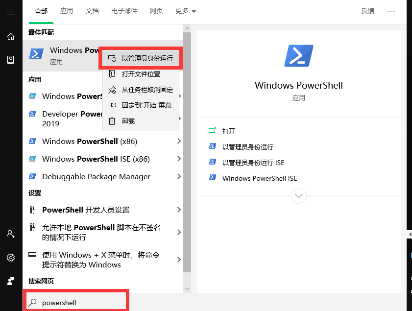
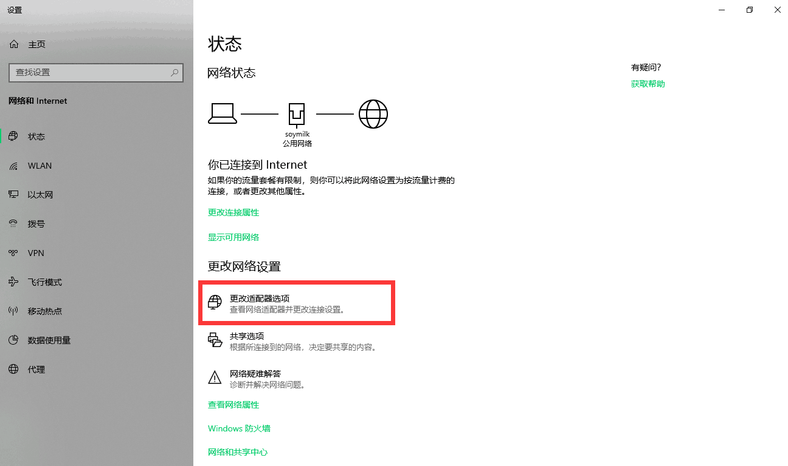
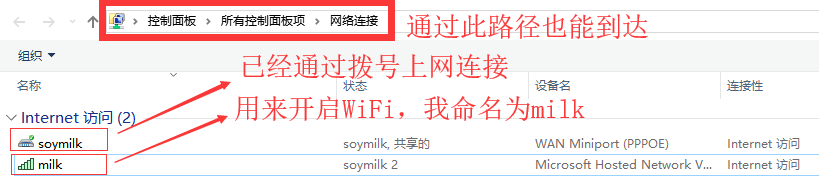
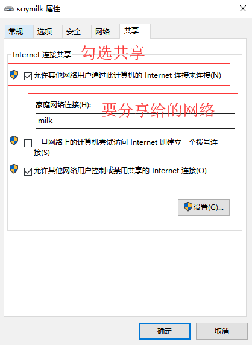

Windows 10 开启WiFi
写在前面
校园网拨号上网发现 Windows 10 自带的移动热点无法开启。
多番查找实验发现可以通过命令窗口开启 WiFi，使用命令netsh wlan
开始
(一)启动命令行窗口
以管理员权限打开命令行窗口
关于管理员权限的启动：鼠标右击，选择以管理员身份运行
我使用的是 powershell

(二)第一条命令
netsh wlan set hostednetwork mode=allow ssid=soymilk key=hello.milkssid: 热点名称
key: 热点密码
(三)第二条命令
netsh wlan start hostednetwork启动网络
(四)分享你的网络
第一步: 启动网络和 Internet 设置
第二步: 更改适配器选项

第三步: 查看你的网络状态

第四步: 共享设置

其他
问题：单次使用，电脑重启后需要再次重复设置
关于 netsh:
netsh(Network Shell)是 Windows 系统本身提供的功能强大的网络配置命令行工具。
可能会有诸多问题。难难难。有更好方法请留言告知。😘
comment:
- Valine
- LiveRe
- ChangYan